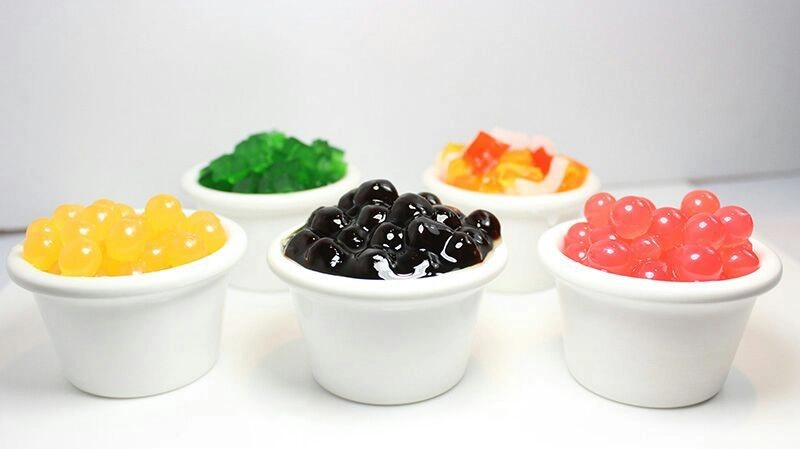

Trà sữa trân châu
Trà sữa trân châu bắt nguồn từ Đài Trung, Đài Loan vào đầu thập niên 1980. Nancy Yang, 1 chủ quán trà người Đài Loan đã thử thêm trái cây, siro, khoai lang tẩm đường, và trân châu vào trà sữa. Mặc dù thức uống này lúc đầu không phổ biến, nhưng một số đài truyền hình Nhật Bản đã khiến các doanh nhân chú ý. Hiên nay đã lan tỏa đến Việt Nam và được shop GoSaGo chúng tôi sử dụng.

Trà sữa trân châu
1. Nguyên liệu làm trà sữa cần có:
Nơi “nóc nhà của thế giới” âm vang tiếng chuông từ những ngôi chùa cổ,
nơi nổi tiếng với những câu chuyện huyền thoại về những vị chân sư
biết thuật rút đất… chính là quê hương của trà sữa.
Trà sữa ở đây có hương vị mạnh và béo từ muối hồng Hy Mã Lạp Sơn và bơ
yak. Mà không biết gọi đây là “trà sữa” hay “sữa trà” thì hợp lý hơn
vì món này của Tây Tạng nhiều bơ, sữa hơn cả trà. Một phần có lẽ vì
phong tục truyền thống, phần khác bởi khí hậu cực kì khắc nghiệt,
quanh năm lạnh lẽo nơi đây.
Trà sữa thơm ngon
Trà sữa ở đây có hương vị mạnh và béo từ muối hồng Hy Mã Lạp Sơn và bơ
yak. Mà không biết gọi đây là “trà sữa” hay “sữa trà” thì hợp lý hơn
vì món này của Tây Tạng nhiều bơ, sữa hơn cả trà. Một phần có lẽ vì
phong tục truyền thống, phần khác bởi khí hậu cực kì khắc nghiệt,
quanh năm lạnh lẽo nơi đây.
1.1. Cách làm trà sữa trân châu với nguyên liệu trà thượng hạng:
Sẽ ra sao nếu như uống trà sữa mà lại không có trà nhỉ? Thật là phi
lý! Và trà mới là thứ mang tính quyết định nhất đối với 1 ly trà sữa
ngon!
Đoán đúng được thị hiếu của người dân Việt Nam là sính ngoại, thích đồ
nghe lạ tai nên các nhà cung cấp nguyên liệu trà sữa đã bày bán la
liệt trên thị trường những nguyên liệu trà Thái, Đài Loan, Ấn Độ…
nhưng mọi người có biết:
Việt Nam chính là quê hương của cây trà và nước ta cũng là 1 trong
những cường quốc xuất khẩu lớn nhất thế giới. Với nguồn cung khổng lồ,
phong phú về chủng loại và cực kỳ chất lượng, thực sự đây là lựa chọn
tuyệt vời để chế biến trà sữa.
Nguyên liệu cần thiết
Các bạn có thể dùng trà đen để pha trà sữa, cũng có thể sài ô long làm
món kem sữa béo hoặc trà xanh để chế biến trà hoa quả… Việt Nam có tất
nhé!
Với 4 mùa Xuân- Hạ- Thu- Đông và địa hình khí hậu đa dạng, hương vị
trà của Việt Nam cực kì đặc biệt và phong phú. Bạn có thể uống 1 ly
trà đen chế biến tại Bảo Lộc mang hương vị Ấn Độ, cũng có thể nếm ô
long mà ngỡ đang uống trà Đài Loan… nhưng thách bạn tìm ra được 1 loại
đặc biệt nào có thể so sánh với trà Thái Nguyên!
1.2. Nguyên liệu sữa thơm ngon:
Tất nhiên, đã gọi là trà sữa tất phải có sữa. Nhưng sữa ở đây là loại
sữa nào? Ở Tây Tạng, như đã nói ở trên, do điều kiện tự nhiên nên các
loại sữa ở đây chủ yếu là sữa bò, dê, và các chế phẩm từ sữa như bơ. Ở
Anh, sữa cũng chủ yếu là sữa bò.
Việt Nam thì lại khác, sữa dùng trong trong ngành công nghiệp Việt Nam
chủ yếu là sữa thực vật (gọi đây là sữa có hợp lý không nhỉ?), loại
bột sữa này thường có nguồn gốc tại Indo hoặc Thái Lan. Lúc mới được
sử dụng tại Việt Nam, do sự lạm dụng nguyên liệu bột sữa béo này (và
cũng 1 phần do thị hiếu khách hàng nữa) mà đa số các kênh quán sử dụng
vị sữa mạnh, béo.
Loại sữa thơm ngon
Hiện nay, trà sữa lại thay đổi theo xu hướng ít béo hơn và thay vì dùng bột sữa béo thì các quán sử dụng kem (cream) hoặc sữa động vật ít béo, ít đường để thay thế bột sữa béo. Tất nhiên, các món này cũng phải dựa vào nhu cầu khách và tương ứng với từng loại trà, cũng như từng mùa trong năm. Cách làm trà sữa trân châu này vẫn luôn được khách hàng ủng hộ mỗi ngày.
1.3. Cách làm trà sữa trân châu với topping đa dạng:
Trà sữa đã có từ hàng ngàn năm trước, nhưng điều gì tạo nên cơn sốt đến như vậy?
Topping cần thiết
Xin thưa, điều làm nên cuộc cách mạng trà sữa chính là trân châu. Và
quê hương của trà sữa trân châu là Đài Loan. Thực ra, từ hàng trăm,
hàng ngàn năm trước, các cụ ta đã uống trà kèm theo bánh, hoa quả. Một
phần vì thói quen uống là phải ăn, thích nhâm nhi của người Việt. Phần
khác vì uống trà lúc đói rất xót ruột nên phải có đồ ăn kèm.
Những thứ hay được ăn kèm có thể kể tới như kẹo lạc, bánh đậu xanh,
lang luộc… Thậm chí ở 1 số tỉnh miền Tây còn có món khô cá đường ăn
kèm khi uống trà. Có lẽ chính vì thói quen dễ gây nghiền này mà khi
trà sữa trân châu vào Việt Nam, món trà đã bắt đúng gu của người Việt!
Và tất nhiên, đồ ăn kèm hay trân châu là thứ không thể thiếu tạo nên
sức hút của trà sữa!
2. Hưỡng dẫn cách làm trà sữa trân châu:
Để làm được một ly trà sữa thơm ngon, đảm bảo vệ sinh thì yếu tố quan
trọng nhất đó là nguyên liệu. Trên thị trường hiện nay có nhiều loại
bột trà sữa “tổng hợp”, chỉ cần pha một thìa bột với một chút nước là
đã có ngay một ly trà sữa chuẩn vị.
Tuy nhiên, loại bột này không rõ nguồn gốc xuất xứ cũng như các thành
phần cấu tạo nên không đảm bảo vệ sinh an toàn thực phẩm. Vì vậy, bạn
nên sử dụng các nguyên liệu làm trà sữa riêng là trà hoặc bột trà
xanh, sữa tươi hoặc sữa bột, siro các vị.
Càng làm càng nghiện
Trà sữa thì không thể thiếu được trân châu, loại hạt làm tăng sự thú
vị khi thưởng thức trà sữa. Có nhiều nguyên liệu để làm trân châu như
bột năng, bột sắn, bột mì… Tuy nhiên, cách làm trân châu đen hạt tròn
dai ngon, ngọt vị nhất và thường được các quán trà sữa sử dụng nhất là
làm trân châu bằng bột năng và bột cacao.
Để làm trân châu đen, bạn cần chuẩn bị nguyên liệu là bột năng và bột
cacao, trộn với nhau theo tỷ lệ 2:1 (2 phần bột năng – 1 phần bột
cacao) sau đó rây kỹ cho bột thật mịn. Thêm nước nóng vào bột và nhào
đến khi bột đạt được độ dẻo vừa phải, nếu bột khô thì bạn thêm nước,
còn nếu bị nhão thì thêm bột năng.
Để một lát cho bột nguội hẳn và bắt đầu nặn hạt trân châu. Trước khi
nặn, bạn nên xoa một chút bột năng khô vào lòng bàn tay cho đỡ dính và
viên bột thành những hạt nhỏ vừa phải.
Khó cưỡng lại được
Tiếp theo, bạn đặt một nồi nước lên bếp đun sôi và thả hạt trân châu
vào nấu. Lưu ý, trong lúc nấu bạn nên đảo thường xuyên để hạt trân
châu không bị dính vào nhau. Khi hạt trân châu nổi lên thì vớt ra, thả
ngay vào một bát nước đường đã chuẩn bị sẵn.
Khi nguội, bạn có thể vớt ra và thêm vào trà sữa hoặc các món chè cũng
rất ngon. Ngoài cách làm trà sữa trân châu đen hạt tròn, bạn có thể
làm thêm một số loại “topping” khác thêm vào trà sữa như trân châu
sợi, trân châu trắng nhân dừa, thạch phô mai, thạch rau câu, thạch
trái cây, pudding, đậu đỏ… để làm phong phú thêm thực đơn trà sữa.
Trên thị trường cũng có bán các loại trân châu làm sẵn, tuy nhiên, để
đảm bảo an toàn bạn nên tự làm, vừa ngon – bổ – rẻ, vừa tạo nên hương
vị riêng cho trà sữa của mình